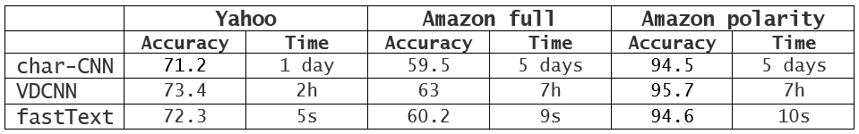
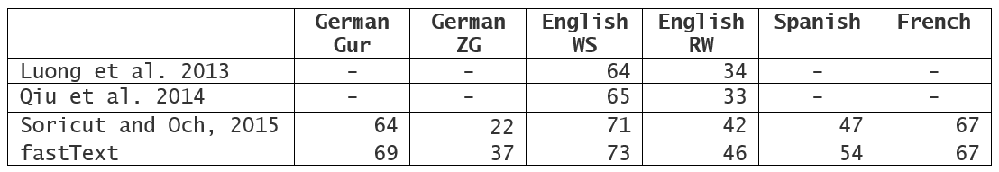

Releasing fastText

Faster, better text classification!
Understanding the meaning of words that roll off your tongue as you talk, or your fingertips as you tap out posts is one of the biggest technical challenges facing artificial intelligence researchers. But it is an essential need. Automatic text processing forms a key part of the day-to-day interaction with your computer; it’s a critical component of everything from web search and content ranking to spam filtering, and when it works well, it’s completely invisible to you. With the growing amount of online data, there is a need for more flexible tools to better understand the content of very large datasets, in order to provide more accurate classification results.
To address this need, the Facebook AI Research (FAIR) lab is open-sourcing fastText, a library designed to help build scalable solutions for text representation and classification. Our ongoing commitment to collaboration and sharing with the community extends beyond just delivering code. We know it’s important to share our learnings to advance the field, so have also published our research relating to fastText.
FastText combines some of the most successful concepts introduced by the natural language processing and machine learning communities in the last few decades. These include representing sentences with bag of words and bag of n-grams, as well as using subword information, and sharing information across classes through a hidden representation. We also employ a hierachical softmax that takes advantage of the unbalanced distribution of the classes to speed up computation. These different concepts are being used for two different tasks: efficient text classification and learning word vector representations.
Efficient learning for text classification
Deep neural networks have recently become very popular for text processing. While these models achieve very good performance in limited laboratory practice, they can be slow to train and test, which limits their use on very large datasets.
FastText helps solve this problem. To be efficient on datasets with very large number of categories, it uses a hierarchical classifier instead of a flat structure, in which the different categories are organized in a tree (think binary tree instead of list). This reduces the time complexities of training and testing text classifiers from linear to logarithmic with respect to the number of classes. FastText also exploits the fact that classes are imbalanced (some classes appearing more often than other) by using the Huffman algorithm to build the tree used to represent categories. The depth in the tree of very frequent categories is therefore smaller than for infrequent ones, leading to further computational efficiency.
FastText also represents a text by a low dimensional vector, which is obtained by summing vectors corresponding to the words appearing in the text. In fastText, a low dimensional vector is associated to each word of the vocabulary. This hidden representation is shared across all classifiers for different categories, allowing information about words learned for one category to be used by other categories. These kind of representations, called bag of words, ignore word order. In fastText we also use vectors to represent word ngrams to take into account local word order, which is important for many text classification problems.
Our experiments show that fastText is often on par with deep learning classifiers in terms of accuracy, and many orders of magnitude faster for training and evaluation. With fastText, we were often able to cut training times from several days to just a few seconds, and achieve state-of-the-art performance on many standard problems, such as sentiment analysis or tag prediction.
 Comparison between fastText and deep learning-based methods.
A dedicated tool
Text classification is very important in the commercial world; spam or clickbait filtering being perhaps the most ubiquitous example. There are tools that design models for general classification problems (such as Vowpal Wabbit or libSVM), but fastText is exclusively dedicated to text classification. This allows it to be quickly trained on extremely large datasets. We have seen results of models trained on more than 1 billion words in less than 10 minutes using a standard multicore CPU. FastText can also classify a half-million sentences among more than 300,000 categories in less than five minutes.
Works on many languages
Besides text classification, fastText can also be used to learn vector representations of words. It has been designed to work on a variety of languages, including English, German, Spanish, French, and Czech, by taking advantage of the languages morphological structure. It uses a simple yet effective way of incorporating subword information that turns out to work very well for morphologically rich languages like Czech, demonstrating that carefully designed character ngram features are strong source of information to enrich the word representations. FastText can achieve significantly better performance than the popular word2vec tool, or other state-of-the-art morphological word representations.
 Comparison between fastText and state-of-the-art word representations for different languages.
We hope the introduction of fastText helps the community build better, more scalable solutions for text representation and classification. Delivered as an open-source library, we believe fastText is a valuable addition to the research and engineering communities, which will ultimately help us all design better applications and further advances in language understanding.